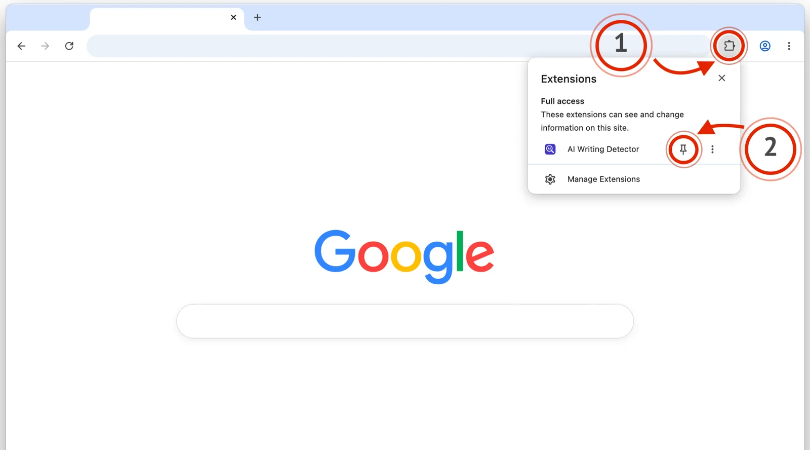
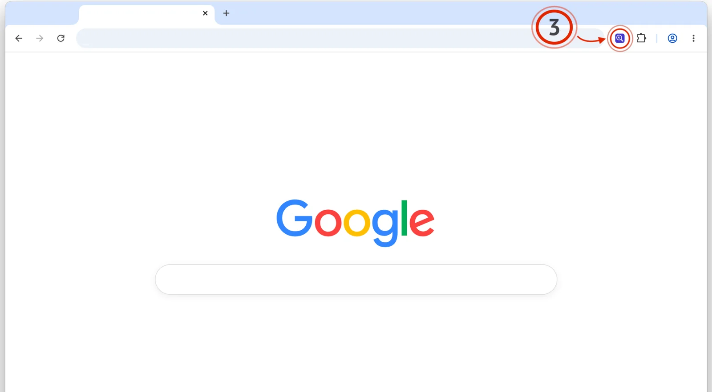

AI Writing Detector Installed
- Click the puzzle piece icon in the top-right corner of your browser.
- Then, click the little pin next to the extension.

Simply click on the extension icon to open the


Simply click on the extension icon to open the
